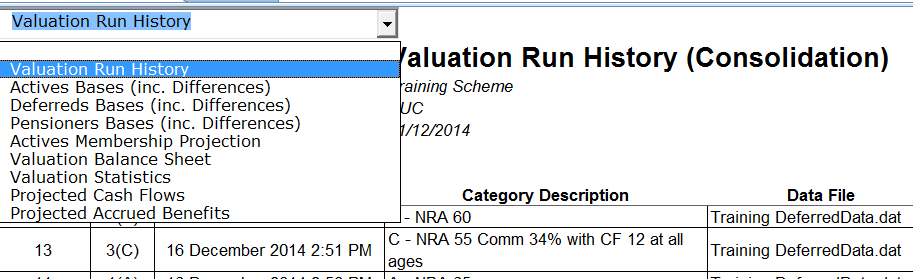

Cashflow and consolidation¶
SuperVal allows you to consolidate valuation results and generate cashflows. This article describes how to use the different options.
Version
This article is based on Version 9.25 of SuperVal. Any screenshots from earlier versions of SuperVal are not materially different from those in V9.25.
Initial setup¶
All runs that need to be consolidated must have the same consolidation folder.

The Consolidation can be set through File > Properties and whenever opening a new scheme.
All runs that are to be consolidated must all have the same Client Name. The Client Name should be the same across modules (i.e. actives, deferreds, ensioners).
You will only be able to run a consolidation on runs of the same type and with the same valuation date. Hence you wouldnt be able to consolidate an Active PUC run with an Active AAN run, or (say) an Active PUC run with a Pensioner PPF run.
All SuperVal results are written into a database file SVResults.mdb in the consolidation folder.
This folder is used for consolidation purposes, so ypiu should not delete it if you need to run a consolidation.
Liabilities (and cashflows) can be split / grouped according to pension increase type. To make use of this new functionality, the different types of increase rate need to be specified as follows:
The names for the cashflows split by pension increase can be defined in the Scheme Financial assumptions:

The column Description used for Consolidation should be populated so that the Cashflow Summary will have column headers using the descriptions above.
As the descriptions are specified in the Scheme > Financial Assumptions there is no need to do any additional work in the basis elsewhere.
Cashflow options¶
The Cashflow parameters are specified on the Main tab in the Active and Deferred modules:
The Deferred Module has the following options:

The Active module has slightly more parameters:

Pension benefits capitalised or spread?¶
Select C Capitalise if you wish exit liabilities to be displayed as capitalised values.
Otherwise S Spread for a payment flow of the exit liabilities.
Death in Deferment method¶
This is only used if S Spread is selected in the above parameter.
Death-in-Deferment benefits will still be valued on a capitalised basis.
However there is a choice as to where the capitalised value will appear.
Select T Table if you wish to specify a table to determine the point where the capital value of the Death in Deferment Pension and Lump Sum are to appear in the cash flow.
Otherwise select D Default for the capital value of the Pension and Lump Sum to appear at the exit point (withdrawal).
Underpin method¶
This is only used if S Spread is selected in the above parameter.
Death-in-Deferment benefits will still be values on a capitalised basis.
However there is choice as to where this capitalised value will appear.
Select T Table if you wish to specify the table to determine the point where the Underpin in excess of the capitalised Retirement and Withdrawal benefits is to appear in the case flow.
Otherwise select D Default if you wish the Underpin excess to appear at the respective retirement or earlier exit point.
Using the Death in Deferment and Underpin Table options¶
An age-related rate table, i.e. EX type, is needed if the Table option is to apply. The reference age is the age nearest at the start of the exit year. The corresponding entry is the age that the capital value is to appear in the cash flow for that years Death in Deferment or Underpin excess benefit.
For example:
| Age | Entry |
|---|---|
| ... | ... |
| 45 | 48 |
| 46 | 49 |
| 47 | 50 |
| ... | ... |
Applying such a table means that the capital value will appear in the 3rd year following the exit year. The value would be rolled forward for 2.5 years interest (allowing for the fact that the value initially is half way through the year) and survivorship.
Consolidation¶
Consolidation setup¶
Once all runs have been done, the next step is to consolidate the runs.
Once a consolidation file and selection edit file have been specified, you will be asked to select the type of consolidation required:

Select the type of run you have and then highlight the categories you want to consolidate.
Amortisation¶
You can specify up to two different recovery plans on this page. The amount amortised and the level of payments needed will be displayed on the Excel output.
The amount amortised can be paid off in level amounts, fixed amounts with accrued interest or as a percentage of salaries.

This can be a useful way to test out initial thoughts for recovery plans and allows you to select yield curves for the amortisation interest rate.
Asset values, other liabilities and expenses¶
On the Other tab you can specify expenses and any additional liabilities.
The assets and the asset roll-up rate can be specified here.

The tab is also used to name the consolidation database and the Excel output produced.
Excel output¶
You can choose from several different sheets. The liabilities on the Valuation Statistics sheet are grouped as specified by you under the Pension Increases in the Financial Assumptions.
The sheets produced are as follows:
- Valuation Run Summary
- Basis Details (different sheet for different modules)
- Actives Membership Projection (if applicable)
- Valuation Balance Sheet
- Valuation Statistics
- Projected Cash Flows
- Projected Accrued Benefits

Cash Flow output For AAN and PUC runs, the Cash Flows given continue until the last benefit payment has been made. For DAB runs the Cash Flow Summary Listings continues for the Control Period only (& only actives).
The relevant cashflows are:
Actives module¶
- Retirement (Normal Cash/Early Cash/Pension)
-
Where
C Capitalisehas been selected in the basis file, in the capitalised liability of exit by Normal Retirement and Early Retirement will appear under the Normal Cash and Early Cash columns.If
S Spreadhas been selected any cash will appear under Normal Cash and Early Cash as appropriate and the spread pension payment flow will appear under the Pension column. - Death (Cash/Pension/Insured)
-
If
C Capitalisedthe Death in Service liability will appear under the Cash column.Where
S - Spreadhas been selected, any cash liability will appear under Cash and the pension liability will be shown under column Pension.Insured Death in Service benefits where SuperVal has calculated the insured premium cost for death in service lump sum and pension and this has been selected as being included in the Consolidation parameters, this will be reflected under the Insured column (for both).
For AAN runs the parameter for include/exclude the death-in-service insured costings is on the Parameters tab field Include Insured Cost in Cash Flow?
For PUC runs including/excluding insured costings is controlled in the parameters under the funding method choice for Consolidation before selecting the runs.
- Ill Health (Cash/Pension/Insured)
-
The Cash column will show the capitalised liability if this has been selected in the basis.
If
S Spreadhas been selected, then any pension liability is shown under Pension. - Leaving Service (Cash/Pension/Death in Def)
-
The capitalised liability will appear under the Cash column if
C Capitalisehas been selected.When
S Spreadhas been selected, all death-in-deferment and cash liabilities are separately shown and the spread deferred retirement liability is shown under column Pension.
Pensioners and Deferreds modules¶
- Deferreds/Pensioners
-
This column is for valuation runs from the Pensioner and Deferred modules. Pensioner cash flows are spread by default. The Deferred cashflows can be spread or capitalised if desired. The spread or capitalised options are specified on the Main tab in the basis.

Other cash-flow outputs¶
- Total benefits cash flow
-
This is simply a sum across the rows for Actives, Deferreds & Pensioners.
- Member Contributions
-
This column shows the value of the (Active) members contributions in each year.
- Company Contributions
-
The value of company contributions in each year is shown here.
This equals Future Liability less Members Contributions plus Insurance and Expenses.
- Expenses
-
Scheme expenses in each year are specified in the Consolidation parameters.
- Investment Income
-
This is a balancing item. The formula for Duration t is:
Assets at Start Year (t+1) Assets at Start Year t Company Contributions at time t Member Contributions at time t + Total Projected Benefit Payments at time t - Assets at Start Year
-
The formula for Duration t is:
Assets at Start Year (t1) plus 1 years interest + Member Contributions year (t1) with years interest + Company Contributions year (t1) with years interest - All Projected Benefit Payments year (t1) excl. Normal Retirement with years interest Normal Retirement Liability year (t1) with 1 years interest - Accrued Benefit (PUC runs only)
-
This is the past service liability at each (Curtate) Duration allowing for projected salaries i.e. ongoing past service liability at each future duration.
Generating cashflows split by pension-increase type¶
The projected cashflows given in the Excel consolidation output are not split by pension-increase type as defined in the Pension Increase parameters. These are available, though, if you select the Cashflow Summary option:

You are asked to specify the consolidation database file created when running the initial consolidation, and then a separate Excel file is created showing the cashflows split by pension type. You can opt to filter the results by membership type (i.e. Actives, Deferreds, Pensioners, All) and/or pension type. Results are also shown graphically.

Notes on consolidation output¶
Consolidations Results are produced in Excel rather than text output. The (visible) changes that have been made to each of the worksheets within the Excel output are as follows:
Each worksheet now displays the following information:
- Client
- Valuation Method
- Valuation Date
- Basis File (only on the Active Membership Projection worksheet)
- Control Period (only on the Valuation Balance Sheet)
A dropdown allows you to view any worksheet you want:
Valuation Balance Sheet¶
The Actives Results are split to show Past and Future Service Liability.
Past Service Liability Totals are provided for Deferreds and Pensioners.
Valuation Summary and Statistics Worksheet¶
- Breakdown of control period liability for Actives
- Valuation Statistics show the Liabilities split by Pension Increase and cause of emerging benefit
- PV 1% of Salaries figured are formatted so that figures exactly equal to previous period are not displayed.
- Average Age and Remaining Service Life along with details of how they are weighted
Membership Projection Worksheet (Actives Only)¶
This starts with the Fund total and subtracts the exits during that year (next line) and adds new entrants to get a new Fund Total.
The Active Membership Projection also shows the projection of salaries

Projected Accrued Benefits¶

The discontinuance liabilities are rolled forward using the expected cashflows produced in the runs.
The assets are rolled forward using the asset roll up rate allowing for any benefit payments
Projected Cash Flows Worksheet¶
Company Contributions column matches text output. The Valuation Excel output Company Contributions column does not match Consolidation Excel Output. The difference is that Valuation Excel output does not include Insured Benefits.